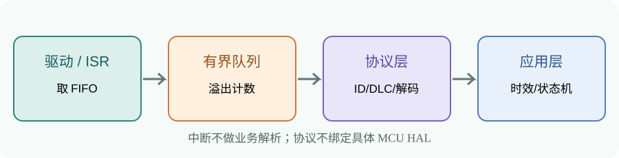

CAN ENGINEERING / CHAPTER 27
第27章 · 让接收中断与业务逻辑分开
软件分层的核心不是把代码放入三个目录，而是明确谁负责读取硬件、谁负责解码、谁负责判断数据是否仍有效。
27.1 一个短中断，一条可追踪的数据路径
驱动层在 ISR 中快速读取硬件 FIFO，连同 ID、帧类型、DLC、时间戳入队；协议任务解析信号；应用层检查数据时效并执行业务动作。把复杂解析和日志打印留在中断中，可能造成下一帧来不及取出。

驱动层对业务字节含义一无所知；协议层不直接绑定某个 MCU 的 HAL；应用层不直接访问 CAN RX FIFO。驱动和协议之间可以经抽象接口传递消息，并非禁止协议发送。
27.2 协议解析必须给出“失败”状态
以下是教学用私有编码：经典 CAN 标准帧 ID=0x100，字节 1、2 为小端无符号车速，系数 0.01 km/h。它不是任何标准 DBC。
typedef struct { float kmh; uint32_t received_ms; } SpeedSample;
/* CanFrame 包含 id、dlc、extended、rtr、data[8] 和 timestamp_ms。 */
bool protocol_decode_speed(const CanFrame *f, SpeedSample *out) {
if (!f || !out || f->id != 0x100u || f->extended ||
f->rtr || f->dlc < 3u || f->dlc > 8u) return false;
uint16_t raw = (uint16_t)f->data[1] |
((uint16_t)f->data[2] << 8);
out->kmh = raw * 0.01f;
out->received_ms = f->timestamp_ms;
return true;
}用 bool 显式报告解码成功与否，优于用 -1.0f 假冒车速。应用还要验证新鲜度：例如本教学示例以 100ms 为上限，过期信号应按安全需求降级。完整的 可编译 C 最小示例与断言在仓库中。
27.3 动手实验：四格队列的第 5 帧去哪了？
点击“接收”五次、期间不处理：前四帧排队，第五帧被拒绝并计入溢出。这是软件队列模型，而非总线物理丢帧率。
队列 0 / 4 · 溢出 0
连续接收 5 帧观察变化。
真实多任务系统还需要并发安全、硬件 FIFO 溢出监控、时序约束、bus-off 恢复状态机、优先级与异常数据策略；本例不声称替代 RTOS 驱动。
27.4 失败用例决定分层是否真的有用
| 输入 | 协议/驱动预期 | 应用预期 |
|---|---|---|
| 扩展帧数值 ID=0x100 | 解码拒绝 | 不更新车速 |
| DLC=2 | 禁止访问 data[2] | 记录信号无效 |
| 有效车速但已超过时效 | 解码可成功 | 降级而非沿用旧值 |
| 队列满、硬件 FIFO 丢帧 | 丢失计数可观察 | 执行相应故障处理 |
验证目标是让每个异常都有明确责任层和可测输出，而不是“目录结构看起来整齐”。
范围与参考
Kvaser CAN Protocol Tutorial（经典 CAN 帧结构）；本章 C 断言示例。信号字节和 100ms 时效均为教学假设，量产须遵循 DBC、MCU 与安全需求。